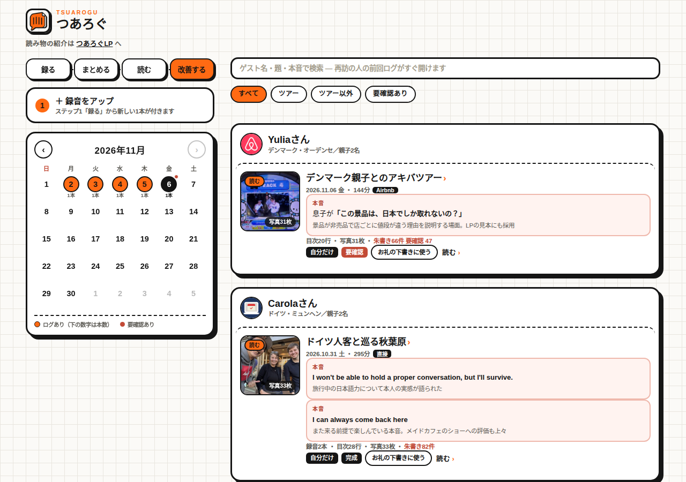
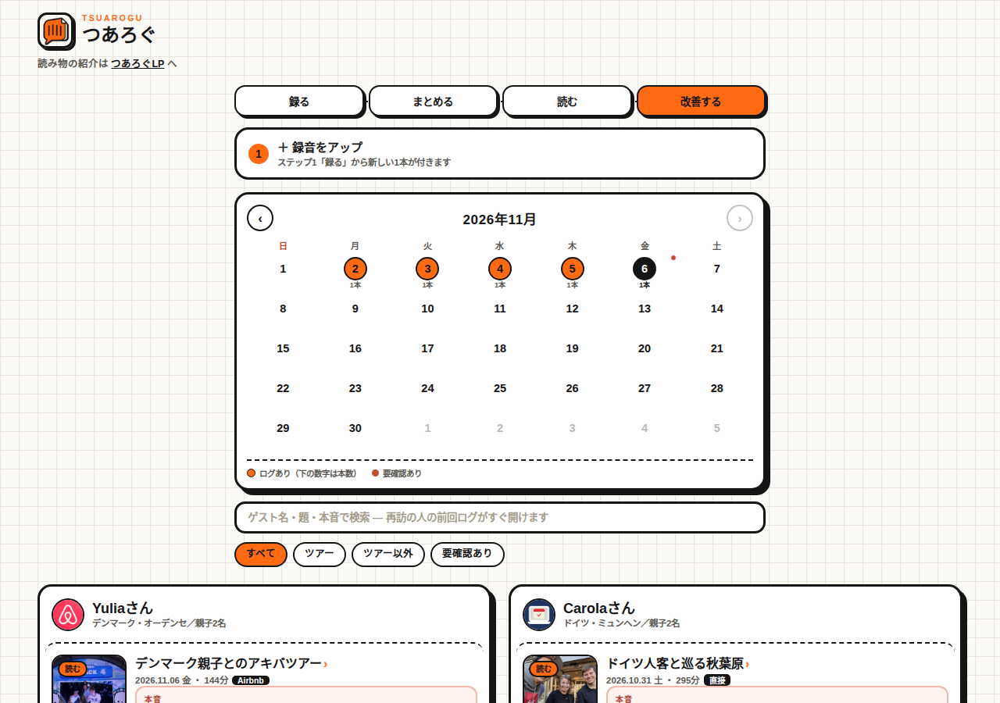
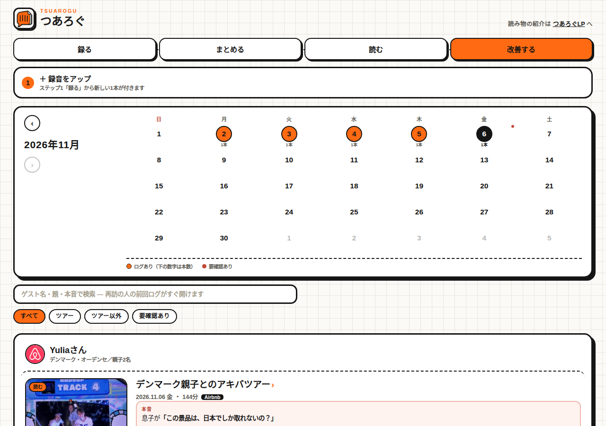
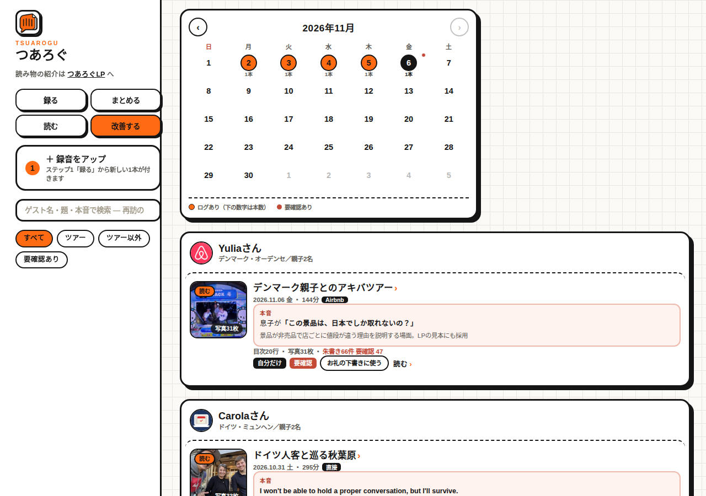
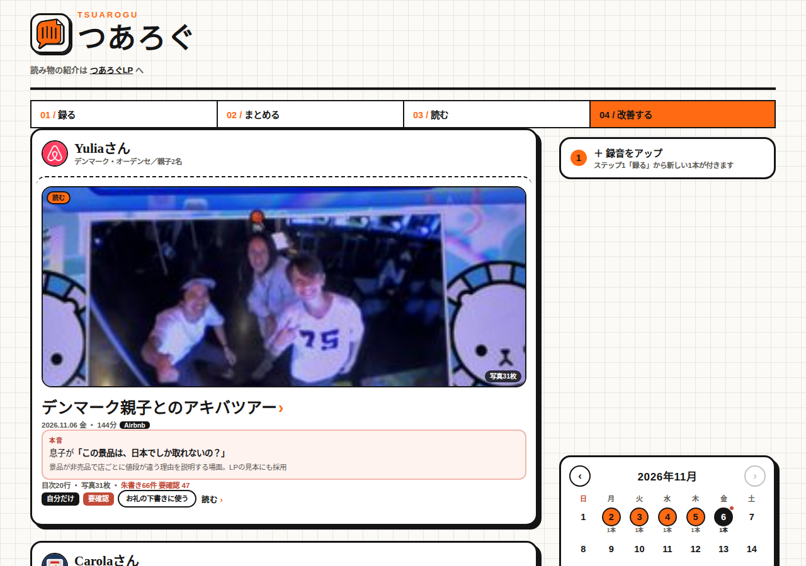

TSUAROGU GUESTBOOK — PC LAYOUT
PC幅（1280px）での配置だけを変えた5案です。中身・機能・実データは現行のゲスト帳そのまま。スマホ表示は全案とも現行どおりです。各案の画像はPC幅の実レンダリングで、「実寸で開く」から実際に触れます。
左カラムにステップ・録音アップ・カレンダーの操作系を集約し、右に検索と一覧を広く取る。作業の流れが左→右で追える、実務寄りの配置。

案1を実寸で開く ›上部の流れは現行のまま中央に残し、一覧だけを2カラムのゲストカードグリッドに。帳面を並べて眺める感覚で、ゲストの顔が一度にたくさん見える。

案2を実寸で開く ›カレンダーを横長の帯にして上部に畳み、一覧は写真を大きくしたワイド行で主役にする。日付は「ある日だけ見る」道具に割り切った配置。

案3を実寸で開く ›ブランド・ステップ・アップ・検索・フィルタを左レールに固定。どれだけスクロールしても操作系が常に見える、アプリのような配置。

案4を実寸で開く ›大きなマストヘッドと番号付きステップ帯。先頭のゲストを特大写真でフィーチャーし、右レールに道具を置く、読み物寄りの顔つき。

案5を実寸で開く ›※ これは見比べ専用ボードです。本番のゲスト帳（tsuarogu-guestbook）には反映していません。スマホ幅では5案とも現行表示のままです。